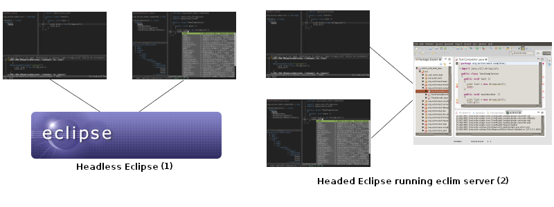

The power of Eclipse in your favorite editor.
Eclim provides the ability to access Eclipse code editing features (code completion, searching, code validation, and many more) via the command line or a local network connection, allowing those features to be integrated with your favorite editor. Eclim provides an integration with Vim, but third party clients have been created to add eclim support to other editors as well (emacs, sublime text 2, textmate).
There are two primary usage scenarios in which eclim is designed to be used:
Eclim is released under the GPLv3.
You can follow the eclim install guide which will walk you through downloading and installing eclim.
After you’ve installed eclim, you can refer to the getting started page which will walk you through creating your first project.
If at any time you have any questions or feedback, feel free to post to one of the eclim mailing lists:
If you would like to get help or ask questions on IRC, then feel free to join #eclim on freenode.net. Please note that I (Eric Van Dewoestine, ervandew on irc) try to stay in the channel as much as possible, but I might not be available to answer questions immediately. It’s also worth noting that I live in California, so if you are in Europe, Asia, or some other timezone whose normal waking hours don’t overlap well with mine, then you may be better off getting help using one of the mailing lists above.
If you’ve found a bug please report the issue to either the eclim-dev mailing list or create a new issue on eclim’s github issue tracker.
When reporting a bug, please include the following information:
A new version of eclim is now available with support for Eclipse 4.21 (2021-09).
A new version of eclim is now available with support for Eclipse 4.18 (2020-12).
Note
Several features have been removed from eclim. Please see the release notes for details.
A new version of eclim is now available with support for Eclipse 4.8 (Photon). This release also contains some fixes for the installer as well as other bug fixes.
Note
Groovy support has been omitted from this release since the groove eclipse feature does not yet support Eclipse 4.8 (Photon).
The new eclim installer has been fixed to handle spaces in the eclipse path and eclimd has been fixed to run under java 9.
Eclim has an all new installer that runs entirely on the command line and now supports the new Eclipse directory layout used by the Eclipse GUI installer.
Note
Windows support has been removed. Going forward eclim will only officially support Linux and OSX.
A new version of eclim is now available with support for Eclipse 4.7 (Oxygen).